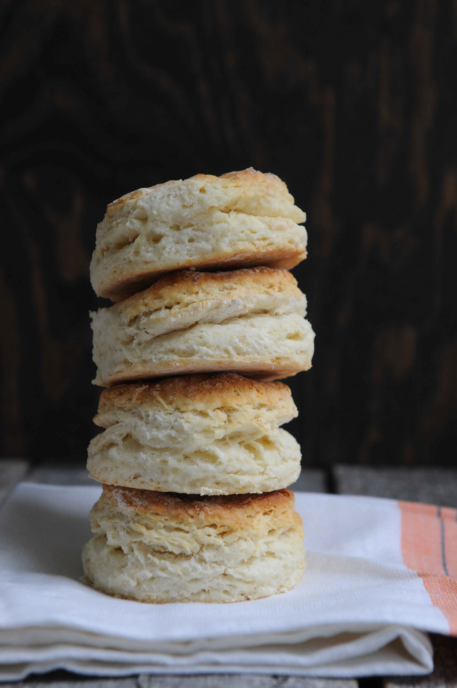

Calee’s Old Fashioned Biscuits

Time: 10 minutes | Bake time: 15 minutes | Yields: 8-10 biscuits
Ingredients:
- 2 c. flour (play around with options!)
- Option 1: 2 c. all purpose flour
- Option 2: 1 c. all purpose flour, ½ c. whole wheat flour, ½ c. corn flour (not corn meal)
- Option 3: ½ c. corn flour, ¼ c. corn meal, 1 ¼ c. all purpose flour
- 2 1/2 tsp. baking powder
- 1/2 tsp. salt
- 1/3 c. butter, cold
- 3/4 c. milk
Directions:
- In a medium mixing bowl stir together flour, baking powder, and salt.
- Using a pastry blender, cut in butter until the mixture resembles coarse crumbs.
- Make a well in the center of the flour mixture.
- Add the milk all at once.
- Using a fork, stir just until moistened and dough pulls away from the sides of the bowl (dough will be sticky—don’t over stir)
- On a floured surface, lightly knead dough with floured hands for 30 seconds or till nearly smooth.
- Lightly roll dough to 3/4-inch thickness. You could just pat it out with your hands.
- Cut dough with a 2 1/2-inch biscuit cutter, dipping the cutter into flour between cuts.
- Place biscuits close together on a lightly greased baking sheet.
- Bake in a 475 degree F. oven for 11 to 15 minutes or till golden brown.
Notes:
Option 3 is my favorite combination of flour!
You can make this recipe vegan by substituting the milk for a plant-based milk of choice (oat milk works best), and using a vegan shortening, like Crisco.
If you don’t have a pastry cutter, use two knives to cut in the shortening. If you don’t have a biscuit cutter, use a drinking glass to cut the biscuits.
(Recipe adapted from Clabber Girl’s Old Fashioned Biscuits, accessed on 08 September 2021)
Photo by Jodie Morgan on Unsplash